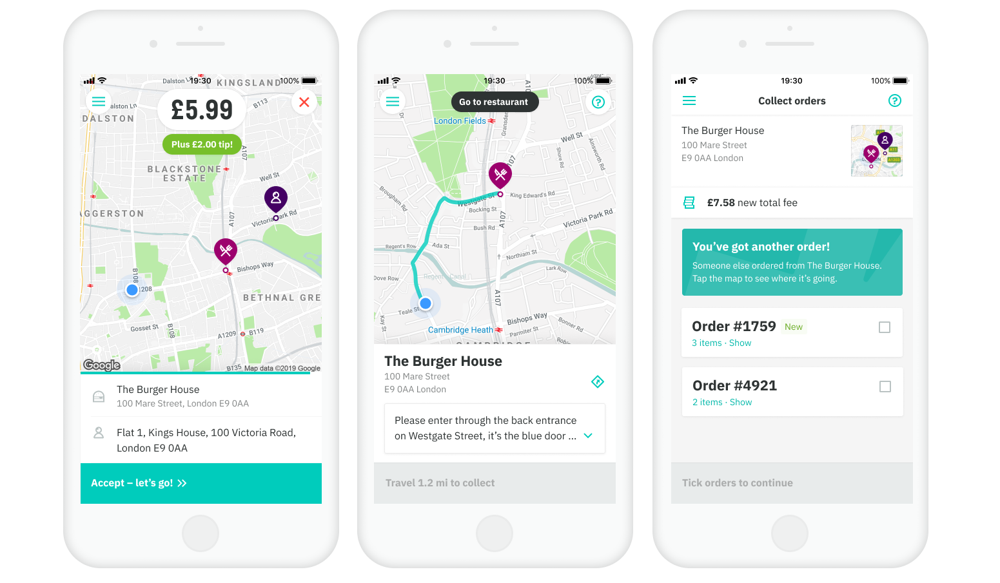

The Deliveroo Rider app is used by 20,000 couriers worldwide to find work, manage their hours, and deliver food to Deliveroo customers.
For two years, I lead design on the Rider Core team, where we focused primarily on the delivery experience. This includes getting riders to restaurants and customers as efficiently as possible, helping them to resolve common delivery issues without calling support, and empowering them with as much information as possible while taking steps to counteract abuse.
Deliveroo operates in 12 different countries, from the United Kingdom to the United Arab Emirates, covering major cities across Europe, Asia, and Australia. Each market is completely different from the next, offering unique cityscapes, rider demographics, employment laws, and environmental conditions. Designing a single product that could accomodate a vast range of users and scenarios was a constant, rewarding challenge.
In the UK, most of Deliveroo's riders are immigrants, working to provide for families; in Italy they are almost exclusively students living with their parents. In UAE a large chunk of riders are illiterate, most transactions are done in cash, and wide roads and hostile temperatures mean motorbikes are the only possible vehicle; in Hong Kong, most deliveries are done by foot, with riders spending more time in elevators than on the ground.
Suffice to say, there's an enormous amount of information that needs to be presented, a huge list of things that can go wrong, and innumerable scenarios that can occur during the order journey.
Over two years on the team, I touched and redesigned practically every part of the app, as we worked iteratively to solve business problems, address rider concerns, and improve functionality. The projects are too many to list here, including everything from flows to address minor edge cases, to massive anti-fraud initiatives. I'd be happy to talk through all of them, given enough time — but in interest of not writing a novel, I will try to keep it short.
In the end, there are two projects that stand out: both intiated by me, one sought to completely rethink the most prominent part of the app; the other a minor, superfluous feature intended for expert users.
The home screen
The home screen is the first thing riders see when they open their app. It’s where they begin and end their sessions, wait for orders, browse zones, and understand demand — the jumping-off point for every aspect of their work.
Yet while we had redesigned just about every part of the app, the home screen was the one thing that had gone unchanged since 2016.
We found there was a huge opportunity here to not just gain parity with competitors, but to build a scalable framework for how we present relevant information to riders, provide better insights into areas and activity, and encourage fluid movement between delivery zones to accomodate shifting demand.
While the idea wasn't initially prioritized for not being directly tied to quarterly metrics, I was able to rouse excitement and gain support from leadership to proceed by building and presenting a prototype framed concretely around company goals.
The new home screen sought to address multiple problems...
The new home screen launched in October 2019, after I had left Deliveroo, but was very well received by riders — including raves about the feature on Reddit, a rare positive post in a critical community.
The really big order number
On the completely other end of the scale is one of my other favorite projects. Affectionately known as the Really Big Order Number, I spearheaded a feature that lets riders summon view with nothing but, well, a really big order number. Unlike the home screen that sought to dramatically improve the most prominent part of the app, this was intended as a shortcut for power users — hidden away, but useful for those who know.
We'd noticed that when collecting orders from restaurants, riders tended to just show their phone screens to the staff, rather than verbally communicating the order number. This makes total sense, when you consider that restaurants are noisy and busy environments, and both the staff and the rider are often non-native speakers.
That said, while headline-sized, the order number on the collection screen still is not legible from across the room. So we thought — how can we improve this experience? Well, what if we make it really big?
I had a blast exploring loads of different interactions and visual treatments here, but in the end, we ended on something quite simple yet functional based on the following requirements:
Since this was intended as a shortcut for power users, we weren't expecting huge numbers right away — so we were absolutely blown away by how quick the uptake of the feature was, and how frequently riders started using it off the bat. Now few things make me happier than spotting a rider flashing a Really Big Order Number to restaurant staff. ✨